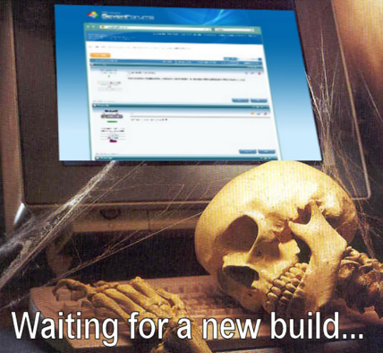
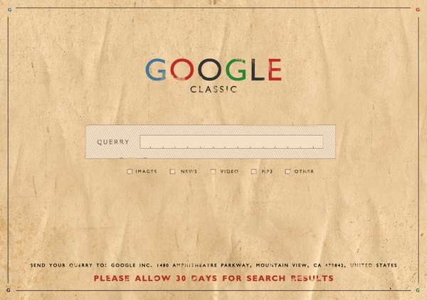

Things We Lost in the Fire
XML Prague 2020
Geert Bormans | geert@gbormans.telenet.be
Ari Nordström | ari.nordstrom@gmail.com
How Geert Realised He Had Become Grumpy and Old


Ari Always Knew

Programming Languages as Religion

Strict DTD

Page by Page

We've Always Done This Pt 1

We've Always Done This Pt 2
90-Minute Standups

The Build Is Green
An XSD for Appearances

'oy' DaSIQjaj

Open Source as Policy
Old Software
You Can Choose Any Software You Want

Not Hawt Enough

Those Were The Days
Latin 1 and Entities
Sometimes SGML Is What You Want

Things We Found among the Ashes
Thank You!